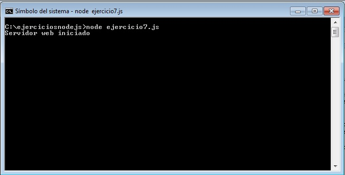
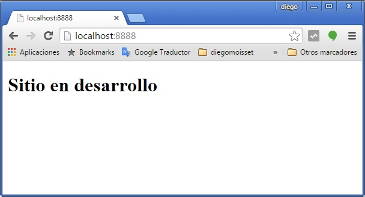
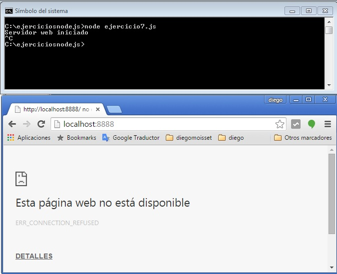
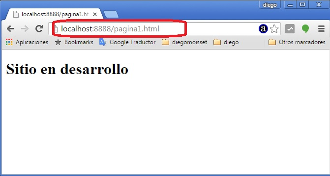

Un módulo fundamental para implementar aplicaciones en un servidor web es el 'http'.
'http' es un módulo del core de Node.js e implementado en C para una mayor eficiencia en las conexiones web.
Lo primero que haremos es repasar el funcionamiento de este protocolo tan importante en Internet.
HTTP (HyperText Transfer Procolol) o (Protocolo de transferencia de hipertexto) permite la transferencia de datos entre un servidor web y normalmente un navegador.
Cuando accedemos a un sitio web desde un navegador escribimos entre otras cosas:
http://host[:puerto][/ruta y archivo][?parámetros]
Desde el navegador parte el pedido y el servidor tiene por objetivo responder a esa petición.
Cuando trabajamos con la plataforma Node.js debemos codificar nosotros el servidor web (muy distinto a como se trabaja con PHP, Asp.Net, JSP etc. donde disponemos en forma paralela un servidor web como puede ser el Apache o IIS)
Veremos inicialmente la implementación de un servidor web utilizando solo el módulo 'http' pero más adelante incorpararemos otros módulos que nos facilitan el desarrollo de sitios web complejos (de todos modos siempre utilizando y extendiendo las funcionalidades del módulo 'http')
Implementar un servidor web con Node.js que retorne HTML con un mensaje indicando que el sitio esta en desarrollo. No importa que archivo pidamos del servidor retornar siempre el mismo HTML.
Creamos el archivo ejercicio7.js y lo guardamos en la carpeta donde estamos haciendo nuestros prácticos para poder probarlo:
var http=require('http');
var servidor=http.createServer(function(pedido,respuesta){
respuesta.writeHead(200, {'Content-Type': 'text/html'});
respuesta.write('<!doctype html><html><head></head>'+
'<body><h1>Sitio en desarrollo</h1></body></html>');
respuesta.end();
});
servidor.listen(8888);
console.log('Servidor web iniciado');
Para probarlo primero ejecutamos el programa ejercicio7.js:

Como vemos luego de ejecutarlo el programa muestra el mensaje 'Servidor web iniciado' y no finaliza, esto debido a que esta esperando peticiones en el puerto 8888.
Podemos abrir nuesto navegador y accedir al servidor local (localhost) en el puerto 8888 y ver que ahora tenemos como resultado:

Si detenemos el servidor que creamos desde la consola (Presionamos las teclas Ctrl C que aborta el programa) y solicitamos nuevamente datos al servidor podremos ver que ahora el servidor no responde:

Es importante entonces tener en cuenta que el programa Node.js este ejecutándose para poder pedirle recursos. Otra cosa muy importante es que cada vez que hagamos combios en el código fuente de nuestra aplicación en JavaScript debemos detener y volver a lanzar el programa para que tenga en cuenta las modificaciones.
Pasemos ahora a analizar el código de nuetro servidor. Primero requerimos el módulo 'http' y guardamos una referencia en la variable http:
var http=require('http');
El módulo 'http' tiene una función llamada createServer que tiene por objetivo crear un servidor que implementa el protocolo HTTP.
La función createServer debemos enviarle una función anónima (o podemos implementar una función definida como vimos en el concepto anterior) con dos parámetros que los hemos llamado pedido y respuesta.
Los objetos pedido y respuesta los crea la misma función createServer y los pasa cuando se dispara el pedido de una página u otro recurso al servidor.
Igual que cuando vimos archivos de texto estamos utilizando programación asincrónica, la función createServer se ejecuta en forma asíncrona lo que significa que no se detiene, sino que sigue con la ejecución de la siguiente función:
servidor.listen(8888);
La función listen (escucha) que también es asíncrona se queda esperando a recibir peticiones.
Antes que solicitemos una página desde el navegador podemos ver en la consola el mensaje de: 'Servidor web iniciado'.
El programa como podemos ver desde la consola no ha finalizado sino que esta ejecutandose un ciclo infinito en la función listen esperando peticiones de recursos.
Dijimos que cuando hay una solicitud de recursos al servidor se dispara la función anónima llegando dos objetos como parámetro:
var servidor=http.createServer(function(pedido,respuesta){
respuesta.writeHead(200, {'Content-Type': 'text/html'});
respuesta.write('<!doctype html><html><head></head>'+
'<body><h1>Sitio en desarrollo</h1></body></html>');
respuesta.end();
});
El primer parámetro que lo iremos viendo a medida que avance el tutorial contiene entre otros datos el nombre del archivo que solicitamos, información del navegador que hace la petición etc. En nuestro programa actual al parámetro pedido no lo utilizamos
El parámetro respueta es el que tenemos que llamar a los métodos:
Otra cosa importante de notar de nuestro servidor web elemental es que no importa que archivo pidamos a nuestro servidor web siempre nos devolverá el código HTML que indicamos en la función anónima que le pasamos a createServer (en este ejemplo solicito el archivo pagina1.html, lo mismo sucedería si pido otras páginas: pagina2.html, pagina3.php etc.):
